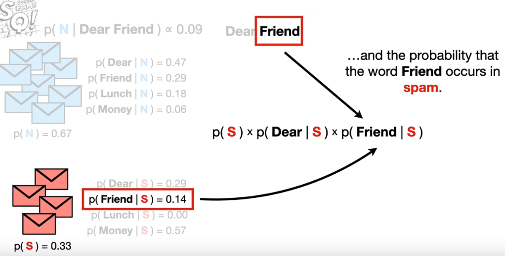
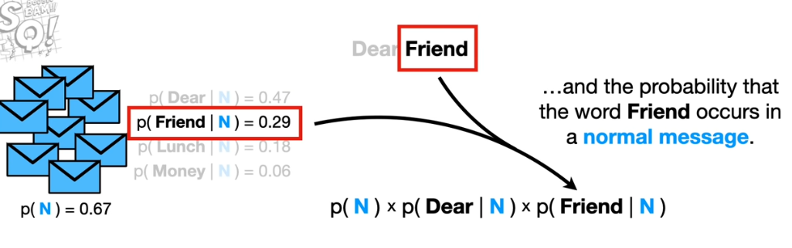
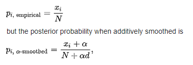
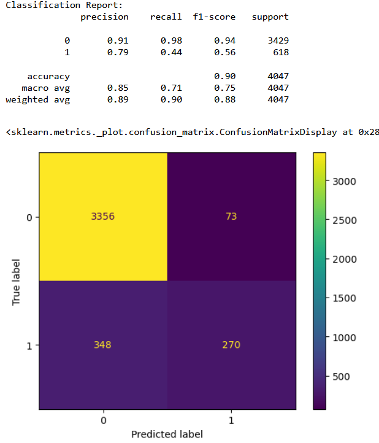
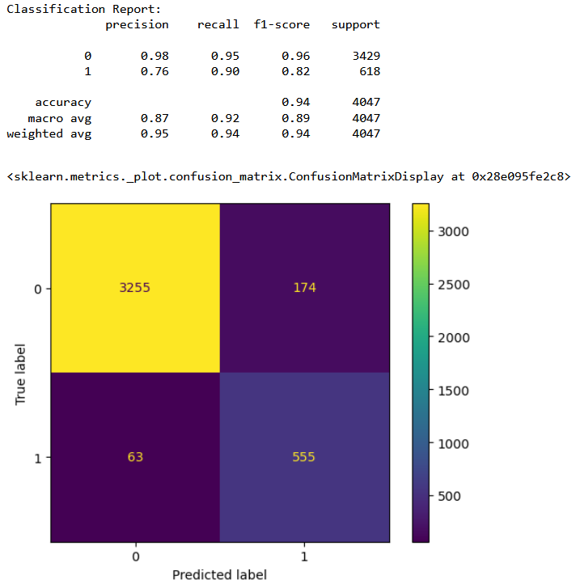
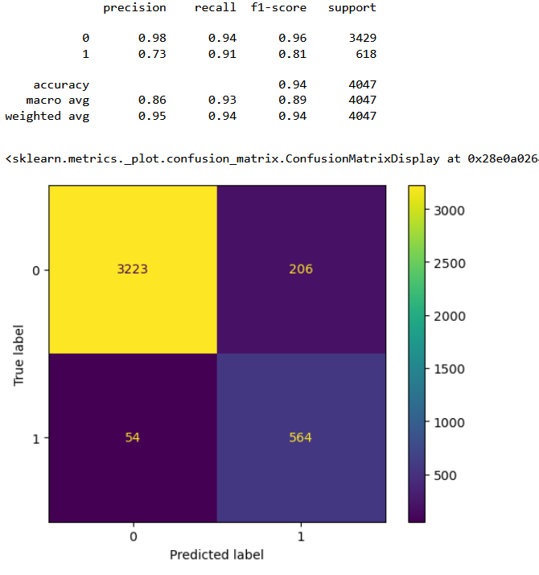

Naïve Bayes

Overview
Naïve Bayes methods are a set of supervised learning algorithms based on applying Bayes' theorem with
the "naïve" assumption of conditional independence between every pair of features given the value of
the class variable.To get clarity about how the algorithm actually works let's look at a small example.
How do we train it?
Let's say we have task to classify if an email is spam or not. Consider that the email contains a set of words
Naive bayes works by taking the probabilities of different features in the data, such as the frequency of certain words
in an email, and combining them to calculate the probability that the email is either spam or not.
The "naïve" part of the name comes from the assumption that all of these features are independent of
each other, even if they might actually be related. Despite this simplification, Naive Bayes can still
be surprisingly accurate in many real-world situations.
The model is trained by finding the probability/likelyhood of each feature (here words) given that the traning point
belongs to a class. For example, the probability that the word "friend" occurs in the dataset is 0.14 given that the email is spam. Similarly,
probabilities for rest of the words/features is calculated and we take a product of these values.

Similarly we calculate the probability that the word "friend" occurs in the dataset is 0.29 given that the email
is not spam. This value is multiplied with other words' probabilities. After having 2 values, one for spam and other
for not spam, we compare which one is larger. The category not spam has a higher probability, and using this measure
we shall predict that the given is not spam.

Smoothing in Naïve Bayes
Smoothing is a technique that handles the problem of zero probability in Naïve Bayes. This can happen when the value
of a feature (which is an attribute of the data point that is to be predicted) is not present in the training data.
Due to this, when we calculate the probability of this feature with respect to a class, we get 0 in return. This will render the
effective probability to be zero. Laplace is commonly used to add a constant integer in the numerator to make the probability
non zero. In order to balance this effect, we add an integer equal to the number of classes in our data. In our example this value
will be equal to 2 (given that there are two classes "spam" and "not spam").

Bernoulli Naïve Bayes
It is a special case of vanilla Naïve Bayes. Here the features are assumed to be binary instead of having more than two categories as it was in the Multinomial Naïve bayes (Multinomial Naïve bayes and Naïve bayes are used interchangibly).
Data Preparation
From EDA and clustering sections, multiple features were found to have similarities. Hence it is palpable to remove similar features to avoid multicollinearity.
Numerical feature selection
Features B_15, B_17 and B_19 were similar in nature, hence, let's remove the former two (on the basis of higher similarity/association). Similarly, among features B_24, B_25 and B_16, dropping the former two features.
Categorical feature selection
Deducing similar categorical feature can be achieved using Chi-Squared tests and Mutual Information gain. After
conducting Chi-Squared test among categorical features against the label, feature "B_3" found to have no correlation.
Therefore, making it imperative to be removed from the data. Further, B_21 and B_10 found to be dependent to each other,
motivating us to remove one of them. Both the features have same p-value for the chi-squared test so we cannot decide
which one to drop on this basis. Hence,removing B_10 as it has less number of categories, or less amount of variation.
Code for feature selection can be found in Code section.
Prediction Modelling
Given that Scikit-Learn only allows numerical data for Naive-Bayes, the following data is used for the classification task:

From the above image we can observe that the data is in numerical format. Apart from that, the data is split into splits using train_test_split function. This function splits the data randomly, where a specific percentage of data points are partitioned as training set and the rest as testing. From the training set, a small parition is seperated for validation. By default, this function chooses points without replacement. Here is the dataset to be used for classificaition.
Code
The code for classification tasks can be found here.
Results
Results for Naive-Bayes is divided into three sections. This is because MultinomialNB cannot be used with numerical data. Hence, I've used the following strategy:
Classification results for MultinomialNB
Classification results for GaussianNB
Combined classifier performance
Conclusions
From the confusion matrices it is clear that the combined classifer performance is the best in terms of having least number of false positives. From the above results we can conclude that with 81% accuracy we can detect a bad cycle, that is, we can predict before hand if a furnace requires maintenance with 81% accuracy.